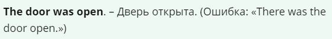
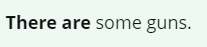
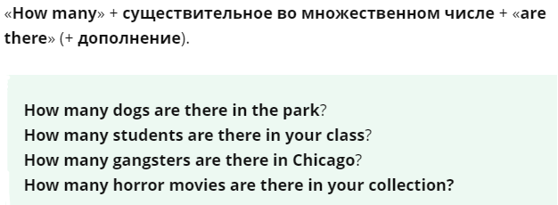

Что означает there is/there are
Оборот «there» + «be» переводится, начиная с обстоятельства места, которое обычно находится в конце предложения:

Если обстоятельства места нет, то при переводе предложение начинается со слов «есть», «имеется», «существует», «бывает», «находится» и т. п. В принципе зачастую «there is/ there are» и вовсе не переводится. Такой вот «невидимый», но крайне необходимый оборот
Когда употребляется there is и there are
«There is» и «there are» используют, когда хотят сказать, что что-то существует (не существует) или находится (не находится) в конкретном месте.
«There is» указывает на наличие в определенном месте какого-то одного предмета (лица). Также используется с неопределенными подлежащими (это когда используется неопределенный артикль («a», «an»), когда артикля нет, или используются слова «some», «any», «no»), и с неопределенными местоимениями как «somebody», «nothing».
«There are» указывает на наличие в определенном месте нескольких (многих) предметов (лиц).
Обратите внимание: слово «there» (там) в обороте «there is / there are» не имеет самостоятельного значения и составляет неразделимое целое с «is/are». Если по смыслу необходимо выразить обстоятельство места словом «there» — «там», то «there» повторяем в конце предложения.
Структура предложений с there is и there are
Чтобы яснее все выглядело, представляем вам простую формулу и ниже пример с цифрами для наглядности:
Утвердительные предложения
Напоминаем! Мы используем «there is» для единственного числа, а «there are» для множественного.
«There is» также используем с неисчисляемыми существительными (uncountable nouns):
Число глагола «be» определяется по числу первого существительного, стоящего после этого оборота:
Сокращения (contractions). «There is» в упрощенном варианте становится «there's». Почти всегда в неформальной переписке или в разговорной речи используется именно такой вариант оборота.
Сокращать, как известно, можно по-разному, но обратите внимание на вариант с «are»:
Говоря о неформальном общении, мы можем использовать «there's», даже когда речь идет о множественном числе. Но не вздумайте использовать это в формальной переписке или на экзамене. This is forbidden.
Обычно «there» не используется с определенным подлежащим.
Вопросительные предложения
Вопросы формируются обычной перестановкой (подлежащее «there» меняется местами со сказуемым «be»):
При постановке вопроса к определению подлежащего используются вопросительные слова «how many», «how much» сколько и вопросительное местоимение «what», которые предшествуют подлежащему:
В ответе на последний вопрос глагол «to be» может употребляться и во множественном числе, если констатируется факт наличия нескольких предметов или явлений (или, например, в случае их перечисления):
«How many» с «are there». Если мы хотим узнать количество существующих объектов, то используем «how many» по следующей структуре:
«There» можно использовать и в «question tags» (краткий общий вопрос, утверждающий вопрос).
Отрицательные предложения
В отрицательных предложениях после глагола «to be» употребляется либо «not» (когда перед следующим за отрицанием существительным стоит местоимение или числительное), либо «no» (в остальных случаях).
Краткий отрицательный ответ состоит из слова «no», за которым следуют «there» и глагол «to be» в соответствующей форме с отрицательной частицей «not»:
There «aren't» с «any». Когда мы хотим сказать о нулевом количестве чего-либо, то используем «there aren't any».
То же самое касается неисчисляемых существительных:
«There» может также использоваться в предложениях, где «be» является вспомогательным глаголом в форме progressive или passive. Обратите внимание на порядок слов:
Также конструкцию можно использовать с модальными глаголами:
На русский язык эта структуру следует также переводить с конца.
Временные формы there + be
А что там насчет других временных форм? Или тут заправляет только Present? Отнюдь!
«There» используется с различными формами «be» в самых разных временах. Употребляйте себе на здоровье!
Cледует обратить внимание, что в вопросе в будущем времени перед «there» ставится «will», а глагол «to be» ставится после него.
Разница между there is/there are и it/they
Взгляните на следующие предложения. Сперва мы ознакамливаемся с сутью предложения с помощью «there is / there are», а дальше ссылаемся на упомянутое с помощью «it» или «they».
Конструкции «there is» и «there are» используются только по отношению к новой информации. Если что-либо уже упоминалось в контексте, то тогда следует употреблять «it is» или «they are».
Мы также используем «it» + «to be» + прилагательное + инфинитивные обороты (infinitive clauses). В таких предложениях акцент падает на инфинитивный оборот: